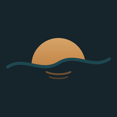

Os rios da nossa região, explicados com clareza.
Conheça o Horizonte em pouco mais de um minuto: como ele acompanha os rios da bacia do Guaíba e o que você encontra no boletim.

HorizonteConheça o Horizonte em pouco mais de um minuto: como ele acompanha os rios da bacia do Guaíba e o que você encontra no boletim.